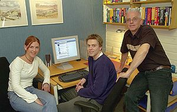
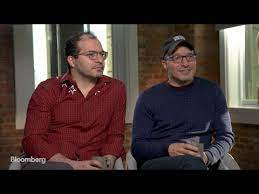

Most Inspiring People Definitely Check Them Out

- 
- 
Quincy Larson
Erik Trautman
Refsnes Data
The Hadi Brothers
Imagine a world where everyone knows how to code. A world where “programming ninja” finally exits the zeitgeist because, well… that’s all of us now. A world where we can all squash bugs (if we want), automate our most annoying tasks, and build the future with our lightning-fast fingertips. Welcome to Quincy Larson ’s world. Though it hasn’t fully materialized yet, he’s building it every day.
teaching himself to code through online resources and attending App Academy in San Francisco, Erik Trautman created The Odin Project, an online, open-source education program that teaches aspiring web developers to code and become job-ready
Hege, Ståle, and Jan Egil Refsnes are the authors of W3Schools. They all have long and solid experience with Internet development. Today their greatest concern is W3Schools, a web site that has quickly become one of the most popular in the world, with ever increasing visitor traffic.
In 2013 Hadi and his twin brother Ali launched the education nonprofit Code.org, which Hadi continues to lead full-time as CEO. Code.org has established computer science classes reaching 30% of US students, created the most broadly used curriculum platform for K-12 computer science, and launched the global Hour of Code movement that has reached hundreds of millions of students spanning every country in the world.
At First It Might Be Frustrating But Keep Going You'll Eventually Realize How Easy It Is To Learn Doesn't Matter Where You Start But Start Somewhere
More Intresting Things Are on the way